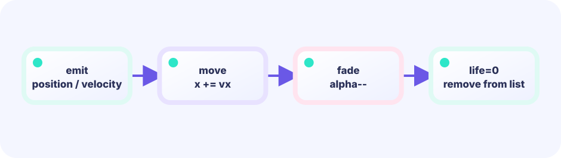

Stars
Fall, collide, score.
stars []star
★★★★☆ / PLAYABLE
Stars participate in game rules; sparks are visual only. Their jobs and updates differ, so Game keeps stars and fx in separate boxes.
This lab also sits on the LEVEL 01 boundary between Update (state) and Draw (pixels). Here we dig one layer deeper into projecting the same state through different renderers.
THE ADVANCED-FX PROMISE
updatePlay() still decides score, hits, and wins. Add an fx box to Game; fx.Update() advances only visual time such as particles, and Draw layers fx.Draw() on top. That makes the game flashier without changing its original rules. Moving particles still need their own independent fx.Update(), never a change to play logic.
PLAYABLE / LIVE GO + MOUSE
Move the basket. Fireworks are fx. Watch stars vs fx.parts counts in LIVE GO.
FIRST-TIME READER
Find where this one line is used, then follow how its value changes on screen. This is the shared game-state boundary: add rules in Update, then choose an independent presentation in Draw. The numbered steps below add one system at a time.
ONE RULE TO TRACE
Match the explanation to this line, then test the change in the game.
particles = append(particles, burst...)
DEEP DIVE / TWO SLICES
Stars need basket/floor tests. Sparks only need life. Different types, different updates. The demo shows stars vs fx.Parts side by side.
Fall, collide, score.
stars []star
Spawn, drift, die.
fx.Parts
Different jobs → different fields.
type Game { stars; fx }
TRY IT / TWO BOXES
Left list = stars, right = sparks. Stars collide; sparks age, so keep them separate.
IN THE DEMO
Gameplay entities ≠ ephemeral FX.
type Game struct {
stars []star // play entities
fx vfxfx.System // ephemeral FX
}
// NEVER: objects []any{star, spark, ...}WHY TWO SLICES?
“In basket?” vs “life==0?” are different ifs.
WHY NOW?
The more objects, the more a split pays off.
TRY NEXT
Next: gravity play vs flap whoosh FX.
FEEDBACK